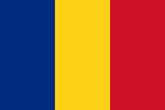

  <div id="map"></div>
  <div class="vanmape">
    <div class="dugmici">
      <label>
        <input type="radio" id="option1" name="option1" [(ngModel)]="selectedOption" value="POIS" (change)="onOptionChange()">
        Show Petrol Stations
      </label>
      <label>
        <input type="radio" id="option2" name="option1" [(ngModel)]="selectedOption" value="Restaurants" (change)="onOptionChange()">
        Show Restaurants
      </label>
      <label>
        <input type="radio" id="option3" name="option1" [(ngModel)]="selectedOption" value="Accommodations" (change)="onOptionChange()">
        Show Accommodations
      </label>
      <label>
        <input type="radio" id="option4" name="option1" [(ngModel)]="selectedOption" value="ChargingStations" (change)="onOptionChange()">
        Show Charging Stations
      </label>
      <label>
        <input type="radio" id="option5" name="option1" [(ngModel)]="selectedOption" value="None" (change)="onOptionChange()">None
      </label>
    </div>
    <div class="Info">
      <div class="predlozi">
        <div class="naslov">
          <h1>Recommenended breaks</h1>
        </div>
        <div class="odmaralista">
          <div class="pumpe">
            <h1>Petrol stations</h1>
            <div *ngIf="proposedPOIS" class="predlozenaOdmaralista">
              <app-list-rest-areas [arrayRestAreas]="proposedPOIS" [startPoint]="startPoint" [ListType]="'Petrol station'"></app-list-rest-areas>
            </div>
          </div>
          <div class="restorani">
            <h1>Restaurants</h1>
            <div *ngIf="proposedRestaurants" class="predlozenaOdmaralista">
              <app-list-rest-areas [arrayRestAreas]="proposedRestaurants" [startPoint]="startPoint" [ListType]="'Restaurant'"></app-list-rest-areas>
            </div>
          </div>
        </div>
      </div>
      <div class="sve-granice">
        <div class="granica" *ngIf="this.isRouteInHungary">
          <div class="naslovDiv">
            <h1 class="naslovGranica">Border crossings Hungary</h1>
            
          </div>
          <a class="putanjaDoGranicu" (click)="openCala()">Border crossing Cala</a>
          <a class="putanjaDoGranicu" (click)="openKelebija()" >Border crossing Kelebija</a>
          <a class="putanjaDoGranicu" (click)="openHorgos()">Border crossing Horgos</a>
        </div>
        <div class="granica" *ngIf="this.isRouteInMontenegro">
          <div class="naslovDiv">
            <h1 class="naslovGranica">Border crossings Montenegro</h1>
            
          </div>
          <a class="putanjaDoGranicu" (click)="openJabuka()">Border crossing Jabuka</a>
          <a class="putanjaDoGranicu" (click)="openGostun()">Border crossing Gostun</a>
        </div>
        <div class="granica" *ngIf="this.isRouteInCroatia">
          <div class="naslovDiv">
            <h1 class="naslovGranica">Border crossings Croatia</h1>
            
          </div>
          <a class="putanjaDoGranicu" (click)="openBatrovci()">Border crossing Batrovci</a>
          <a class="putanjaDoGranicu" (click)="openSid()">Border crossing Sid</a>
        </div>
        <div class="granica" *ngIf="this.isRouteInRumuny">
          <div class="naslovDiv">
            <h1 class="naslovGranica">Border crossings Romania</h1>
            
          </div>
          <a class="putanjaDoGranicu" (click)="openVatin()">Border crossing Vatin</a>
        </div>
        <div class="granica" *ngIf="this.isRouteInBosnia">
          <div class="naslovDiv">
            <h1 class="naslovGranica">Border crossings Bosnia And Herzegovina</h1>
            
          </div>
          <a class="putanjaDoGranicu" (click)="openKotroman()">Border crossing to Kotroman</a>
          <a class="putanjaDoGranicu" (click)="openZvornik()">Border crossing to Mali Zvornik</a>
          <a class="putanjaDoGranicu" (click)="openRaca()">Border crossing to Sremska Raca</a>
          <a class="putanjaDoGranicu" (click)="openTrbusnica()">Border crossing to Trbusnica</a>
        </div>
        <div class="granica" *ngIf="this.isRouteInBulgaria">
          <div class="naslovDiv">
            <h1 class="naslovGranica">Border crossings Bulgaria</h1>
            
          </div>
          <a class="putanjaDoGranicu" (click)="openVrskaCuka()">Border crossing to Vrska Cuka</a>
          <a class="putanjaDoGranicu" (click)="openGradina()">Border crossing to Gradina</a>
        </div>
        <div class="granica" *ngIf="this.isRouteInMacedonia">
          <div class="naslovDiv">
            <h1 class="naslovGranica">Border crossings North Macedonia</h1>
            
          </div>
          <a class="putanjaDoGranicu" (click)="openPresevo()">Border crossing to Presevo</a>
        </div>
      </div>
      <div class="skrozDesni">
        <div class="granica">
          <div class="naslovDivPutevi">
            <h1 class="naslovGranica">Javno preduzece putevi Srbije</h1>
            
          </div>  
          <a class="putanjaDoGranicu" target="_blank" href="https://www.putevi-srbije.rs/index.php/%D1%81%D1%82%D0%B0%D1%9A%D0%B5-%D0%BD%D0%B0-%D0%B4%D1%80%D0%B6%D0%B0%D0%B2%D0%BD%D0%B8%D0%BC-%D0%BF%D1%83%D1%82%D0%B5%D0%B2%D0%B8%D0%BC%D0%B0">Show the state of the roads in Serbia</a>
        </div>
        <div class="divzadugme">
          <button class="dugmeDesno" (click)="saveTravel()">Save Trip</button>
          <button class="dugmeDesno" [routerLink]="['/searchTravel']">Go back</button>
        </div>
      </div>
    </div>
  </div>
  
  
